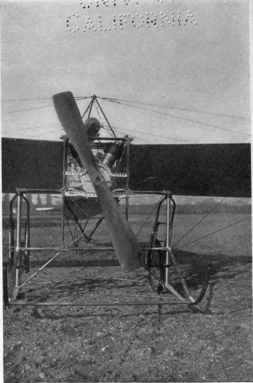

Chapter X. The Perils Of Flying
Description
This section is from the book "The New Art Of Flying", by Waldemar Kaempffert. Also available from Amazon: The New Art of Flying.
Chapter X. The Perils Of Flying
From what has been said in the foregoing chapter it may well be inferred that a man who attempts to fly in the unsteady lower stratum of the atmosphere in which we live is almost in the same position as a drop of quicksilver on an exceedingly unsteady glass plate. Unlike the drop of quicksilver, however, he is provided with a more or less imperfect apparatus for maintaining a given course on the unsteady medium to which he trusts himself.
Were it not that the whirling maelstroms, the quiet pools, the billows and breakers of the great sea of air are invisible, the risks of flying would perhaps not be so great. Only the man in the air knows how turbulent is the atmosphere even at its calmest. " The wind as a whole," wrote Langley a decade ago, " is not a thing moving along all of a piece, like the water in the Gulf Stream. Far from it. The wind, when we come to study it, as we have to do here, is found to be made of innumerable currents and counter-currents which exist altogether and simultaneously in the gentlest breeze, which is in reality going fifty ways at once, although, as a whole, it may come from the east or the west; and if we could see it, it would be something like seeing the rapids below Niagara, where there is an infinite variety of motion in the parts, although there is a common movement of the stream as a whole".
Through these invisible perils the airman must feel his way in the brightest sunshine, like a blind man groping his way in a strange room. He can tell you that against every cliff, every mountain side, every hedge, every stone wall, the air is dashed up in more or less tumultuous waves. The men who crossed the English Channel found that against the chalk cliffs of Dover a vast, invisible surf of air beats as furiously as the roaring, visible surf in the Channel below,— a surf of air that drove nearly all of them out of their course and imperilled their lives. There are whirlpools, too, near those cliffs of Dover, as Moisant used to tell. He was sucked down into one of them within two hundred feet of the sea. His machine lurched heavily, and it was with some difficulty that he managed to reascend to a height at which he could finish the crossing of the Channel.
Sometimes there are descending currents of air with very little horizontal motion, just as dangerous as the breakers. Into such maelstroms the pilot may drop as into unseen quicksands. On his historic flight down the Hudson River, Curtiss ran into such a pitfall, fell with vertiginous rapidity, and saved himself only by skilful handling of his biplane. A less experienced pilot would have dropped into the river. A sudden strong gust blowing with the machine would have a similar effect.
Such are the concentration of mind and the dexterity required by very long cross-country flights that a man's strength is often sapped. During the Circuit de l'Est of 1910, in which the contestants were compelled to fly regardless of the weather, the German, Lindpaintner, had to give up because of physical and nervous exhaustion. Another competitor crawled under his machine, as soon as he alighted, and went asleep. Wilbur Wright has been credited with the remark: " The more you know about the air, the fewer are the chances you are willing to take. It's your ignorant man who is most reckless".
Because of the air's trickiness, starting and alighting are particularly difficult and dangerous. More aeroplanes are wrecked by novices in the effort to rise than from any other cause. As a general rule a new man tilts his elevating rudder too high, and because he has not power enough to ascend at a very steep angle, he slides back with a crash. In high winds even practised airmen find it hard to start. During the meeting at Havre in August, 1910, Leblanc and Morane were invited to luncheon at Trouville. Like true pilots of the air they decided to keep their engagements by travelling in their machines. At half past eleven they ordered their Blériots trundled from their sheds. Twice they were dashed back by the wind before they succeeded in taking the air. An untried man would have wrecked his machine in that wind.
The pneumatic tired wheels on which a machine runs in getting up preliminary speed serve also for alighting, as we have seen. When a monoplane glides down at the rate of forty-five miles an hour and strikes the ground, some disposition must be made of its energy. Usually skids or runners, like those of a sled, are employed for that purpose, the bicycle wheels giving way under the action of springs, so as to permit the skids to arrest the machine. Men like the Wrights can bring an aeroplane to a stop without spilling a glass of water; but your unpractised hand often comes down with a shock that makes splinters of a high-priced biplane.
Fig. 64. Two-cylinder Anzani motor on a Letourd Niepce monoplane.
Photograph by Edwin Levick.
Inexperience in the correct manipulation of stabilising devices is a fruitful cause of accidents, — perhaps the most fruitful. The manipulation of these corrective devices is no easy art. Machines and necks have been broken in the effort to acquire it. Man and aeroplane must become one. The horizontal rudder, which projects forward from many biplanes, is like the cane of a blind man. With it the pilot feels his way up or down, yet without touching anything. Balancing from side to side is even more difficult. Curiously enough, it is when the machine is near the ground that it is hardest of all to bring the aeroplane back to an even keel. Imagine yourself for the first time in your life seated in a biplane with a forty-foot span of wing, sailing along at the rate of thirty-five miles an hour, about ten feet from the ground. If your machine suddenly drops on one side, it will scrape on the ground before you can twist your planes and lift the falling side by increasing the air pressure beneath it. You will come down with a crash. If, on the other hand, you are an old air-dog, you will tilt up your horizontal or elevation rudder and glide up before you attempt to right yourself. So, too, if you see a stone wall or a hedge in your course, you will lift yourself high above it. Why? To avoid the waves of air dashed up against the wall or hedge. For if you did not rise, the waves would catch you and toss you about, and you might lose your aerial balance.
Continue to: